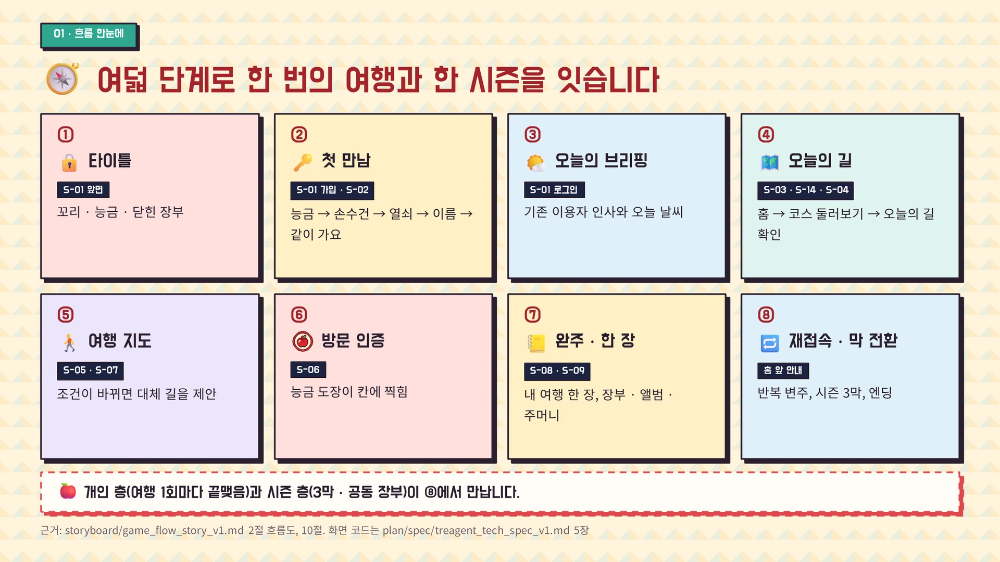
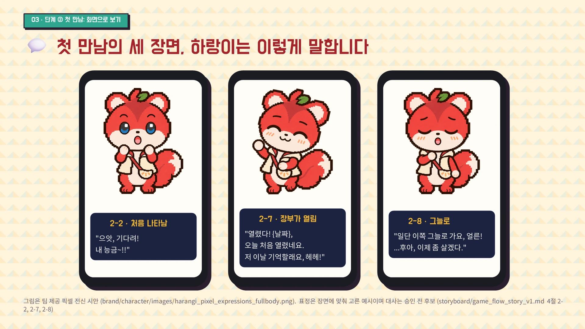
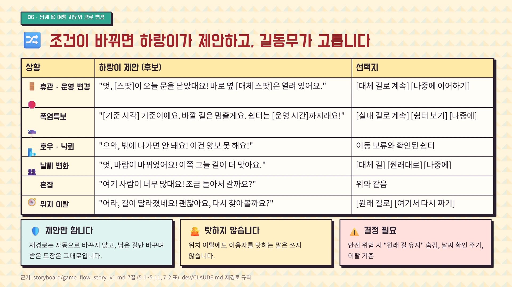
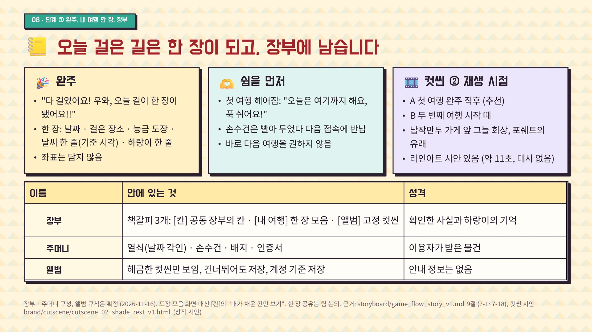
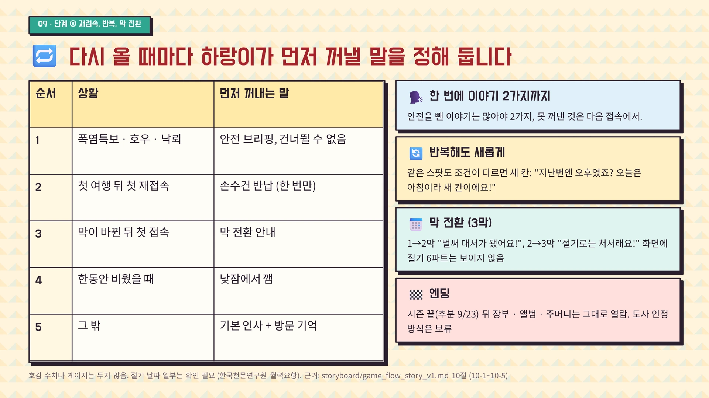
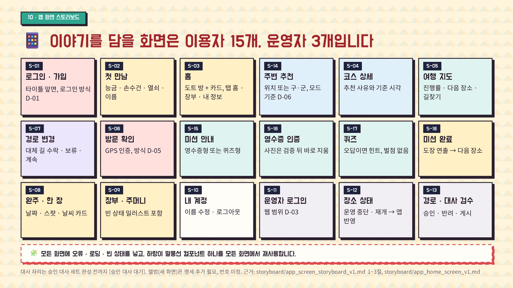
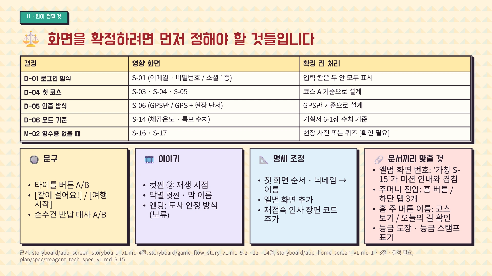

🛡️ 안전 먼저 | 특보 · 쉼터 운영 시간은 이야기보다 앞서고, 기준 시각을 함께 씁니다
근거: storyboard/game_flow_story_v1.md 1절 (worldview.md 2-3·2-4·4-5·4-7·5-5절). 구컨셉 표시가 있는 이전 문서(20261110_game_storyboard_v1, cast_and_late_join_v1, shotlist_v1)와 영상용 훅·전환 문서는 이번 범위에서 뺌

3장 글 보기
01 · 흐름 한눈에
🧭 여덟 단계로 한 번의 여행과 한 시즌을 잇습니다
①
🔒 타이틀
S-01 앞면
꼬리 · 능금 · 닫힌 장부
②
🔑 첫 만남
S-01 가입 · S-02
능금 → 손수건 → 열쇠 → 이름 → 같이 가요
③
🌤️ 오늘의 브리핑
S-01 로그인
기존 이용자 인사와 오늘 날씨
④
🗺️ 오늘의 길
S-03 · S-14 · S-04
홈 → 코스 둘러보기 → 오늘의 길 확인
⑤
🚶 여행 지도
S-05 · S-07
조건이 바뀌면 대체 길을 제안
⑥
방문 인증
S-06
능금 도장이 칸에 찍힘
⑦
📒 완주 · 한 장
S-08 · S-09
내 여행 한 장, 장부 · 앨범 · 주머니
⑧
🔁 재접속 · 막 전환
홈 앞 안내
반복 변주, 시즌 3막, 엔딩
🍎 개인 층(여행 1회마다 끝맺음)과 시즌 층(3막 · 공동 장부)이 ⑧에서 만납니다.
근거: storyboard/game_flow_story_v1.md 2절 흐름도, 10절. 화면 코드는 plan/spec/treagent_tech_spec_v1.md 5장
4장 글 보기
02 · 단계 ① 타이틀 화면
🔒 로그인 전에는 하랑이가 보이지 않고, 흔적만 보입니다
요소 | 연출 | 이야기 속 의미
🌬️ 로딩 | 바람이 화면을 한 번 지나갑니다 | 날씨 안내의 은유로 시작
📕 닫힌 장부 | 표지 가운데에 바람결 문양 열쇠 구멍 | 열쇠가 있어야 열린다는 암시
🐿️ 꼬리 | 모서리에서 꼬리 끝이 살랑이다 능금을 보고 쏙 숨음 | 하랑이는 있지만 아직 안 보임
🍎 능금 | 화면 아래에서 굴러와 로고 옆에서 멈춤 | 가입 뒤 같은 능금이 다시 굴러 장면이 이어짐
💬 문구 | "하랑이와 함께 오늘 날씨에 맞는 길을 찾아 걸어요." (확정 캐치프레이즈) |
🔘 버튼 후보 A
[장부 열기] 기존 · [처음이에요] 신규
이야기에 맞고, 보조 글씨로 '로그인' · '가입'을 분명히 표시
🔘 버튼 후보 B
[로그인] · [시작하기]
기능이 바로 읽힘
하랑이 대사 없음, 소리는 바람 소리 정도 (P0 제외 가능). 필요한 에셋: 꼬리 · 능금 · 닫힌 장부 분리 이미지. 버튼 문구는 결정 필요. 근거: storyboard/game_flow_story_v1.md 3절
5장 글 보기
03 · 단계 ② 신규 이용자의 첫 만남
🔑 이용자가 먼저 하랑이를 돕고, 열쇠로 장부를 엽니다
2-2 · 가입 성공
멈췄던 능금이 다시 굴러오고 하랑이가 처음 나타남
"으앗, 기다려! 내 능금~!!"
2-3 · 능금 주워 주기
이용자가 먼저 하랑이를 도움, 이파리가 처짐
"엇, 주워주신 거예요?! 고마워요..."
2-4~5 · 손수건
주머니 깊숙이 있던 손수건을 건넴 → 안에서 열쇠 발견
"...어? 안에 뭐가 싸여 있어요. 열쇠?!"
2-6~7 · 열쇠 돌리기
열쇠가 돌아가며 날짜가 새겨지고 빈 칸이 펼쳐짐
"열렸다! {날짜}, 오늘 처음 열렸네요."
2-8 · 그늘로
둘이 함께 숨 돌림, 이파리 회복
"일단 이쪽 그늘로 가요, 얼른!"
2-9 · 이름
이름 입력 또는 건너뛰기 (건너뛰면 "길동무 님")
"뭐라고 불러요?"
2-10 · 같이 가요
선택지 하나, 가짜 선택지는 만들지 않음
"같이 가 줄래요, 탐험가 {이름} 님?"
2-11~13 · 장부와 위치
칸 하나 = 한 곳 · 한 날씨. 위치는 쓰는 동안만, 저장 안 함
"아직 다 비었어요, 같이 채워요!"
👆 탭은 6~7번
14행이지만 자동 장면이 많습니다. 대사는 한 번에 1~2문장.
⏳ 기다림 설정 (확정)
하랑이는 장부를 열어 줄 사람을 '계속' 기다렸습니다. 독점 표현은 쓰지 않습니다.
⚠️ 확인 필요
중간 종료 시 재개 위치, 첫 방문 플래그 시점 (열쇠 돌리기 완료 때 제안)
대사는 승인 전 후보에서 줄여 옮김. 로그인 방식은 결정 D-01. 근거: storyboard/game_flow_story_v1.md 4절 (2-1~2-14)

6장 글 보기
03 · 단계 ② 첫 만남: 화면으로 보기
💬 첫 만남의 세 장면, 하랑이는 이렇게 말합니다
😲 2-2 · 처음 나타남
"으앗, 기다려! 내 능금~!!"
😊 2-7 · 장부가 열림
"열렸다! {날짜}, 오늘 처음 열렸네요. 저 이날 기억할래요, 헤헤!"
😌 2-8 · 그늘로
"일단 이쪽 그늘로 가요, 얼른! ...후아, 이제 좀 살겠다."
그림은 팀 제공 픽셀 전신 시안 (brand/character/images/harangi_pixel_expressions_fullbody.png). 표정은 장면에 맞춰 고른 예시이며 대사는 승인 전 후보 (storyboard/game_flow_story_v1.md 4절 2-2, 2-7, 2-8)
7장 글 보기
04 · 단계 ③ 기존 이용자의 로그인과 브리핑
🌤️ 다시 열쇠를 돌리면, 하랑이가 오늘의 바람을 먼저 알려 줍니다
① 🔑 장부 열기
로그인 = 열쇠를 돌리는 1초 연출
▶
② 👋 인사
"어서 와요, {이름} 님!"
▶
③ 🌡️ 브리핑
기온 · 체감, 특보, 기준 시각, 오늘의 모드
▶
④ 🏠 홈
진행 중인 여행이 있으면 이어하기를 앞에
인사 변형 | 대사 · 연출 (후보)
🧺 첫 여행 뒤 첫 재접속 | 손수건 반납. A "깨끗이 빨아서 바짝 말렸어요, 헤헤!" / B "열심히 빨았어요, 후훗!"
😴 한동안 비웠을 때 | 낮잠에서 깸: "으음... 5분만... 앗, 벌써 왔어요?!" (비운 시간 기준은 확인 필요)
🔁 같은 날 다시 | 짧은 인사만, 브리핑은 줄임 (하루 한 번 원칙)
🧭 첫 칸 전 이용자 | "탐험가 {이름} 님", 이름을 건너뛰었으면 "길동무 님"
🛡️ 브리핑 규칙
폭염특보면 브리핑을 건너뛸 수 없음
기준 시각과 기상 기준 지점(AWS 여부) 표기
확인 불가면 추측하지 않고 쉼터 안내
기온 기준(현재 위치/구·군)은 확인 필요
근거: storyboard/game_flow_story_v1.md 5절 (3-1~3-6, 3-3 인사 변형)
8장 글 보기
05 · 단계 ④ 홈과 오늘의 길
🗺️ 홈은 하랑이의 작은 방, 오늘 맞는 길을 골라 둡니다
🏠 홈
S-03
도트 방 장면 + 날씨 배지, 주 버튼은 상태에 따라 오늘의 길 확인 · 이어하기 · 쉼터 보기
▶
📍 둘러보기
S-14
코스를 고르면 하랑이가 문으로 나서는 외출 연출 (약 1.5초). "바람 읽는 중이에요... 킁킁!"
▶
🗂️ 코스 상세
S-04
카드마다 한 줄 사유와 기준 시각, 추천 순서 표기
▶
✅ 오늘의 길
"한 번 더 바람 읽을게요!" → 경로 있음 / 없음
홈 한마디 변형 | 대사 후보
🌱 첫 칸 전 | "첫 칸 채우러 가요! 오늘 바람이 좋아요!"
🌆 선선한 저녁 | "우와, 오늘 바람 진짜 좋은데요?! 이런 날은 해 지고 나서 걷는 게 딱이죠!"
🌿 더운 날 | "오늘은 쉬엄쉬엄 가요! 실내 길로 골라 놨어요."
🛑 폭염특보 | 야외 길 안내를 멈추고 [쉼터 보기]를 앞에 둠, 기준 시각과 운영 시간 포함
☔ 호우 · 낙뢰 | "으악, 오늘은 밖에 나가면 안 돼요! 이건 양보 못 해요!"
🔁 진행 중 여행 | "어서 와요! 아까 하던 길, 이어서 걸을까요?"
홈 구성(도트 방 · 하단 탭 홈 · 장부 · 내 정보 · 주 버튼 슬롯 · 외출 연출)은 2026-11-17 확정, 외출 연출 시점은 결정 필요. 결과는 항상 실제 기상 데이터와 같게 말함. 근거: storyboard/app_home_screen_v1.md 1·2·4·5절, storyboard/game_flow_story_v1.md 6절 (4-1~4-16, 6-4)

9장 글 보기
06 · 단계 ⑤ 여행 지도와 경로 변경
🔀 조건이 바뀌면 하랑이가 제안하고, 길동무가 고릅니다
상황 | 하랑이 제안 (후보) | 선택지
🚪 휴관 · 운영 변경 | "엇, [스팟]이 오늘 문을 닫았대요! 바로 옆 [대체 스팟]은 열려 있어요." | [대체 길로 계속] [나중에 이어하기]
🛑 폭염특보 | "[기준 시각] 기준이에요. 바깥 길은 멈출게요. 쉼터는 [운영 시간]까지래요!" | [실내 길로 계속] [쉼터 보기] [나중에]
☔ 호우 · 낙뢰 | "으악, 밖에 나가면 안 돼요! 이건 양보 못 해요!" | 이동 보류와 확인된 쉼터
🌬️ 날씨 변화 | "엇, 바람이 바뀌었어요! 이쪽 그늘 길이 더 맞아요." | [대체 길] [원래대로] [나중에]
👥 혼잡 | "여기 사람이 너무 많대요! 조금 돌아서 갈까요?" | 위와 같음
🧭 위치 이탈 | "어라, 길이 달라졌네요! 괜찮아요, 다시 찾아볼까요?" | [원래 길로] [여기서 다시 짜기]
"후아, 여기 그늘 좋죠? ...사실 저, 견습생이 되기 전에 서두르다 한참 앉아 있어야 했거든요. 아, 아니에요, 그 얘기는 나중에요!"
인증이 안 될 때 | 하랑이 안내 (후보)
🚫 권한 거부 | "위치를 못 읽어서 도장을 못 찍어요... 설정에서 허용해 줄 수 있어요?"
📡 위치 실패 | "하늘이 트인 곳에서 다시 해 볼래요?"
📏 너무 멂 | "조금만 더 가까이 와 줘요. 인증 지점은 [설명]이에요!" (반경 수치는 말하지 않음)
🌫️ 정확도 부족 | "위치가 흐릿해요... 잠깐 기다렸다가 다시 눌러 볼까요?"
🔀 경로 바뀜 | "어라, 길이 바뀌었어요! 다시 확인할게요." → 단계 ⑤
🔑 세션 만료 | "다시 열쇠를 돌려 줄래요? 걸은 길은 그대로예요!"
도장은 앱 화면 연출, 문양은 모두 같음 (확정). 좌표는 저장하지 않고 서버가 거리 · 정확도 · 측정 시각을 확인. 인증 반경은 결정 D-05. 근거: storyboard/game_flow_story_v1.md 8절 (6-1~6-9, 8-2)

11장 글 보기
08 · 단계 ⑦ 완주, 내 여행 한 장, 장부
📒 오늘 걸은 길은 한 장이 되고, 장부에 남습니다
🎉 완주
"다 걸었어요! 우와, 오늘 길이 한 장이 됐어요!!"
한 장: 날짜 · 걸은 장소 · 능금 도장 · 날씨 한 줄(기준 시각) · 하랑이 한 줄
좌표는 담지 않음
🫶 쉼을 먼저
첫 여행 헤어짐: "오늘은 여기까지 해요, 푹 쉬어요!"
손수건은 빨아 두었다 다음 접속에 반납
바로 다음 여행을 권하지 않음
🎞️ 컷씬 ② 재생 시점
A 첫 여행 완주 직후 (추천)
B 두 번째 여행 시작 때
납작만두 가게 앞 그늘 회상, 포쉐트의 유래
라인아트 시안 있음 (약 11초, 대사 없음)
이름 | 안에 있는 것 | 성격
📒 장부 | 책갈피 3개: [칸] 공동 장부의 칸 · [내 여행] 한 장 모음 · [앨범] 고정 컷씬 | 확인한 사실과 하랑이의 기억
🎒 주머니 | 열쇠(날짜 각인) · 손수건 · 배지 · 인증서 | 이용자가 받은 물건
🎞️ 앨범 | 해금한 컷씬만 보임, 건너뛰어도 저장, 계정 기준 저장 | 안내 정보는 없음
장부 · 주머니 구성, 앨범 규칙은 확정 (2026-11-16). 도장 모음 화면 대신 [칸]의 "내가 채운 칸만 보기". 한 장 공유는 팀 논의. 근거: storyboard/game_flow_story_v1.md 9절 (7-1~7-18), 컷씬 시안 brand/cutscene/cutscene_02_shade_rest_v1.html (창작 시안)

12장 글 보기
09 · 단계 ⑧ 재접속, 반복, 막 전환
🔁 다시 올 때마다 하랑이가 먼저 꺼낼 말을 정해 둡니다
순서 | 상황 | 먼저 꺼내는 말
1 | 폭염특보 · 호우 · 낙뢰 | 안전 브리핑, 건너뛸 수 없음
2 | 첫 여행 뒤 첫 재접속 | 손수건 반납 (한 번만)
3 | 막이 바뀐 뒤 첫 접속 | 막 전환 안내
4 | 한동안 비웠을 때 | 낮잠에서 깸
5 | 그 밖 | 기본 인사 + 방문 기억
🗣️ 한 번에 이야기 2가지까지
안전을 뺀 이야기는 많아야 2가지, 못 꺼낸 것은 다음 접속에서.
🔄 반복해도 새롭게
같은 스팟도 조건이 다르면 새 칸: "지난번엔 오후였죠? 오늘은 아침이라 새 칸이에요!"
📅 막 전환 (3막)
1→2막 "벌써 대서가 됐어요!", 2→3막 "절기로는 처서래요!" 화면에 절기 6파트는 보이지 않음
🏁 엔딩
시즌 끝(추분 9/23) 뒤 장부 · 앨범 · 주머니는 그대로 열람. 도사 인정 방식은 보류
호감 수치나 게이지는 두지 않음. 절기 날짜 일부는 확인 필요 (한국천문연구원 월력요항). 근거: storyboard/game_flow_story_v1.md 10절 (10-1~10-5)

13장 글 보기
10 · 앱 화면 스토리보드
📱 이야기를 담을 화면은 이용자 15개, 운영자 3개입니다
S-01
로그인 · 가입
타이틀 앞면, 로그인 방식 D-01
S-02
첫 만남
능금 · 손수건 · 열쇠 · 이름
S-03
홈
도트 방 + 카드, 탭 홈 · 장부 · 내 정보
S-14
주변 추천
위치 또는 구·군, 모드 기준 D-06
S-04
코스 상세
추천 사유와 기준 시각
S-05
여행 지도
진행률 · 다음 장소 · 길찾기
S-07
경로 변경
대체 길 수락 · 보류 · 계속
S-06
방문 확인
GPS 인증, 방식 D-05
S-15
미션 안내
영수증형 또는 퀴즈형
S-16
영수증 인증
사진은 검증 뒤 바로 지움
S-17
퀴즈
오답이면 힌트, 벌점 없음
S-18
미션 완료
도장 연출 → 다음 장소
S-08
완주 · 한 장
날짜 · 스팟 · 날씨 카드
S-09
장부 · 주머니
빈 상태 일러스트 포함
S-10
내 계정
이름 수정 · 로그아웃
S-11
운영자 로그인
웹 범위 D-03
S-12
장소 상태
운영 중단 · 재개 → 앱 반영
S-13
경로 · 대사 검수
승인 · 반려 · 게시
🧩 모든 화면에 오류 · 로딩 · 빈 상태를 넣고, 하랑이 말풍선 컴포넌트 하나를 모든 화면에서 재사용합니다.
대사 자리는 승인 대사 세트 완성 전까지 [승인 대사 대기]. 앨범(새 화면)은 명세 추가 필요, 번호 미정. 근거: storyboard/app_screen_storyboard_v1.md 1~3절, storyboard/app_home_screen_v1.md

14장 글 보기
11 · 팀이 정할 것
⚖️ 화면을 확정하려면 먼저 정해야 할 것들입니다
결정 | 영향 화면 | 확정 전 처리
D-01 로그인 방식 | S-01 (이메일 · 비밀번호 / 소셜 1종) | 입력 칸은 두 안 모두 표시
D-04 첫 코스 | S-03 · S-04 · S-05 | 코스 A 기준으로 설계
D-05 인증 방식 | S-06 (GPS + 미션) | 결정됨 (2026-11-17): GPS + 미션. 반경·정확도 수치는 현장 시험 후
D-06 모드 기준 | S-14 (체감온도 · 특보 수치) | 기획서 6-1장 수치 기준
M-02 영수증 없을 때 | S-16 · S-17 | 현장 사진 또는 퀴즈 [확인 필요]
🔘 문구
타이틀 버튼 A/B
[같이 걸어요!] / [여행 시작]
손수건 반납 대사 A/B
🎞️ 이야기
컷씬 ② 재생 시점
막별 컷씬 · 막 이름
엔딩: 도사 인정 방식 (보류)
📐 명세 조정
첫 화면 순서 · 닉네임 → 이름
앨범 화면 추가
재접속 인사 장면 코드 추가
🔗 문서끼리 맞출 것
앨범 화면 번호: S-19로 정함 (S-15는 미션 안내)
주머니 진입: 홈 버튼 / 하단 탭 3개
홈 주 버튼 이름: 코스 보기 / 오늘의 길 확인
능금 도장 · 능금 스탬프 표기